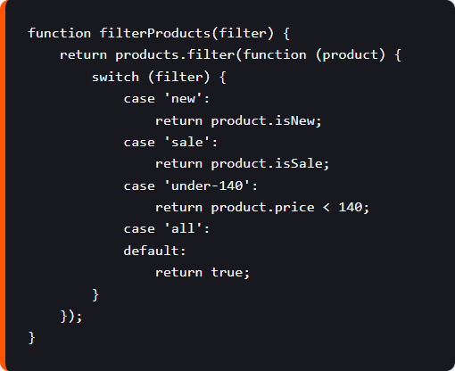
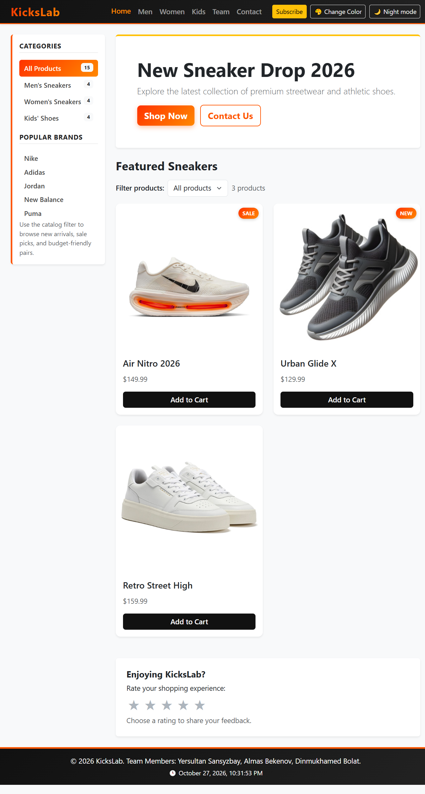

KicksLab · Web Development
Group: SE-2506
Team members:
Project: KicksLab sneaker store
Published site:
https://almas-bo.github.io/web/
Objective: Extend the existing responsive sneaker store with interactive JavaScript features that demonstrate DOM manipulation, event handling, data structures, callbacks, sound, and animation.
js/main.js selects elements with querySelector/querySelectorAll, updates messages and counts, changes form classes and FAQ height, switches the day/night CSS class, and updates star-rating attributes. The home-page stars respond to clicks and visibly show the selected rating.Array.filter(). A switch handles All, New, Sale, and Under $140 choices, and the visible item count updates immediately.addEventListener. Arrow keys move focus through navigation links; Home and End focus the first and last link. Contact validation shows an asynchronous callback response without reloading. Its response is explicitly a local demo and does not send email to a server.map, filter, and forEach demonstrate higher-order iteration.node --check js/main.js.git diff --check passed with no whitespace errors.The existing project had no server endpoint for contact or account registration. Rather than claim that messages were delivered or accounts created, the interface now clearly identifies those responses as front-end demonstrations. The project keeps data local to the page and remains deployable as a static site. Testing the filters and keyboard behavior helped catch and verify the exact visible results.
Before submission: Commit and push the updated files, redeploy the site, and confirm the published page reflects these changes. The URL above is the project's existing GitHub Pages address.
This JavaScript excerpt shows the catalog filter using an array, a higher-order function, and a switch statement. The implementation is in js/main.js.

Figure 1. JavaScript filter function from the Assignment 5 implementation.
The updated KicksLab home page displays the product filter, interactive product cards, theme control, and five-star rating component.

Figure 2. KicksLab home page captured from the local updated project.